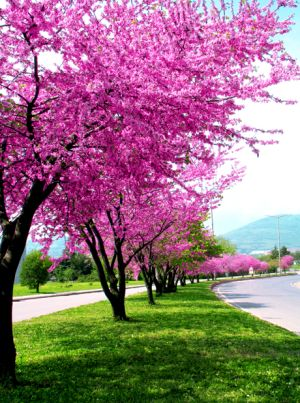
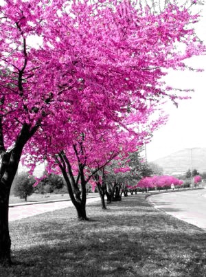

Erguvan yeniden!
Kısa bir süre önce, istediğimiz renkler dışındaki pikselleri MATLAB kullanarak nasıl siyah-beyaz yapabiliriz konusunda bir yazı yazmıştım. Yazıda erguvan rengini geçiren, diğer renkleri ise söndüren bir kod yazmıştık. Hatırlarsanız, yazıyı önemli bir uyarı ile bitirmiştik. Uyarıya uymayıp da denemek isteyen ama MATLAB'ı olmadığı için bu kodu çalıştıramayan çılgın maşuklar varsa üzülmesinler; okurlarımızdan A. Tahir İnce'nin önerisi üzerine bu yazıda aynı işlemi OpenCV'yi kullanarak yapacağız.
OpenCV diyorum ama aslında OpenCV2'yi, yani C++ arayüzünü kastediyorum. Zira, OpenCV'nin C fonksiyonlarından oluşan eski haliyle yazmayı hiç özlemiyorum. Neyse, Boğaziçi'nin simgesi dediğimiz erguvan resmimizi hatırlayalım:

Önceki yazıda ne yaptığımızı tekrar edelim. RGB uzayında çalışmak yerine, öncelikle resmi HSV uzayına attık. H (renk) kanalının değerlerine bakarak bir maske oluşturduk. H kanalının değerleri 0-360 derece arasında ise, erguvan rengine ait değerler 300-340 derece arasındaydı. Bunu da renklerin histogramını çizerek görmüştük. Daha sonra, oluşturduğumuz maskeyi kullanarak S (doygunluk) kanalındaki erguvan olmayan pikselleri sıfırlamış, yani bu pikselleri siyah beyaz yapmıştık. Ardından resmi özgün uzaya geri çevirmiştik. OpenCV'de de aynı işlemi yapacağız. Tek fark, S kanalının 0-360 derece arasında olması yerine 0-180 derece arasında olması. Dolayısıyla bizim istediğimiz sınırlar da öncekilerin yarısı olacak.
Lafı fazla uzatmadan kodu toptan vereyim, yorumlar da açıklamaları olsun:
#include <opencv2/core/core.hpp>
#include <opencv2/imgproc/imgproc.hpp>
#include <opencv2/highgui/highgui.hpp>
void erguvan(cv::Mat& resim) {
// Renk uzayını HSV'ye dönüştürelim.
cv::cvtColor(resim, resim, CV_BGR2HSV);
// Renkli resmi kanallara ayıralım: Hue (renk tonu),
// Saturation (doygunluk), Value (aydınlık).
std::vector kanallar;
cv::split(resim, kanallar);
// Maskeyi oluşturalım
// Renk tonu (ilk kanal) 0-180 derecelik bir açı içinde olacak. 0-360 derece
// arasında düşünürken 300-340 arası erguvan rengiydi, dolayısıyla burada tam
// yarısı olacak. Resimler için aşırıyüklü (overloaded) mantıksal işlemleri
// kullanarak tek satırda bu işi halledebildik.
cv::Mat maske = (kanallar[0] < 150) | (kanallar[0] > 170);
// Maske, erguvan dışında renge sahip olan pikseller için doğru (true),
// diğerleri için yanlış (false) oldu. Maskenin doğru olduğu yerlerin
// doygunluğunu 0'a çektik, yani bu pikselleri siyah-beyaz yaptık.
kanallar[1].setTo(cv::Scalar(0), maske);
// Kanalları geri birleştirelim ve resmi özgün uzayına geri çevirelim.
cv::merge(kanallar,resim);
cv::cvtColor(resim, resim, CV_HSV2BGR);
}
void main() {
// Resmi okuyalım.
cv::Mat resim = cv::imread("erguvan.jpg");
// Ekrana çizdirelim.
cv::namedWindow("Resim");
cv::imshow("Resim", resim);
// Erguvan dışındaki renkleri söndürelim.
erguvan(resim);
// Güncel resmi ekrana çizelim.
cv::namedWindow("Resim 2");
cv::imshow("Resim 2", resim);
// Sonucu kaydedelim.
cv::imwrite("erguvan2.jpg", resim);
cv::waitKey();
}
Kod biraz uzun gibi görünse de çoğu satır yorumdan ibaret. Ve sonuç yine şahane!



3 yorum
Çok teşekkür ederim. C++ ta ummadığım kadar kısa bir kod ile halledilebiliyormuş anlaşılan.
Opencv kendisi ile ilk karşılaşmamdan beri hayellerimi süslemekte, ancak henuz fırsat bulupta baslayamadım.
Birkaç yıldır C kullanmaktayım.Ancak daha çok donanım yazılımı ( microchip,atmel,texas instruments..) ile uğraştığım için opencv C ye başlayayım dedim, fakat özellikle python , C++ yada C# daha kullanışlı olduğu için içlerinden birini seçeceğim.
Windows api lerini az buçuk kullandığımdan ve de linuxe uzak kalmamdan dolayı C++ yada C# tan birine başlamayı düşünüyorum 1 aya kadar.
Kolay gelsin..
Rica ederim, vesilenizle ben de bakmış oldum, benim de ummadığım kadar kısa sürdü kod. Yeni bir kitap çıkmış OpenCV2 ile ilgili. OpenCV'nin sitesinde linki var. Önceki kitap eski sürüme göreydi, şimdiki C++ API'sine göre. C++ kullanmaya karar verirseniz tavsiye edebilirim. C# hiç bilmiyorum fakat numpy ile haşır neşirseniz Python arayüzü kolay gelecektir. İyi çalışmalar.
Elinize sağlık.
bir kaç şey ekleyeyim
cv:: ve std:: yazmakdan sıkılırsanız :)
using namespace std;
using namespace cv;
kullanıverin
birde kodda
std::vector kanallar;
geçiyor sanrım doğrusu
std::vector kanallar;
birde OpenCv nin C++ yüzünü kullanmak için
epey bir cebelleşmnek gerekecek sanırım çünkü
cv::Mat maske = (kanallar[0] 170);
satırı oldukça anlaşılmaz duruyor - çalıştığına göre pratikde -